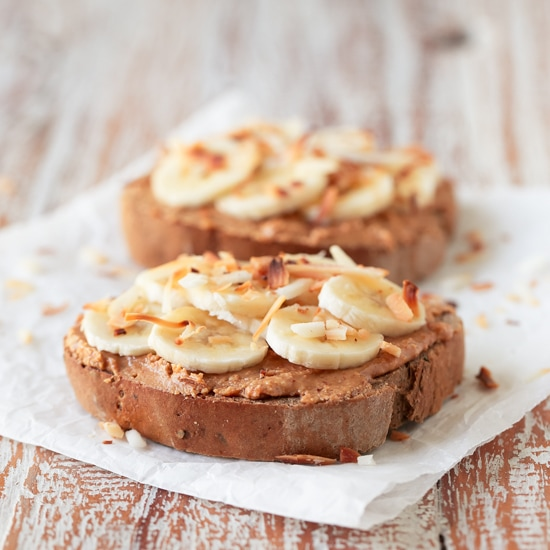

Peanut Butter and Banana Toast

Description
Peanut butter and banana toast (or PBB) is an unrivaled breakfast, and I am not saying this as an opinion.
Today, I will be teaching you all how to make the breakfast of my dreams, and yes, it sounds like a Tyler song.
Ingredients
- one slice of bread
- one banana
- peanut butter (crunchy or smooth, doesn't matter)
Steps
- Toast the slice of bread.
- Slice the banana into thin 1/4in slices.
- Remove toast from oven and spread peanut butter generously on bread.
- Place banana slices on top of peanut butter.
- Place in oven at 400 degreed Farhenheit for 3 minutes or until very warm.